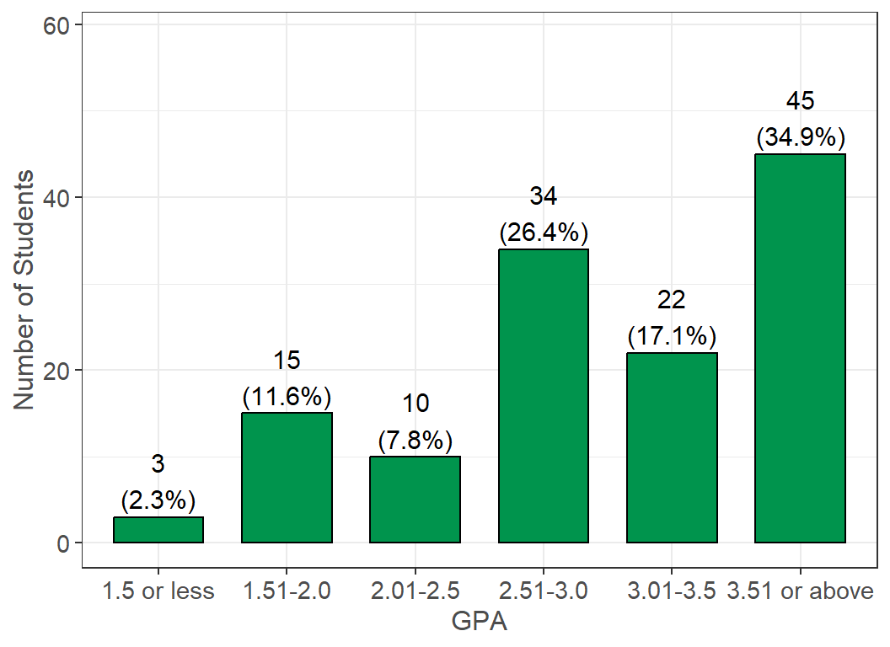

Academic Profile
Students were asked to report information relating to their academics. This includes information such as their class standing, major, GPA, and enrolled units. They were also asked questions about programs they participate in as well as what type of students they identify as (transfer, international, etc.).
As a reminder, students had the option to select “Prefer not to answer” for all questions, and these responses were set as missing values. In addition, 18 (13.6%) students did not finish the survey. The n reporting refers to the total number of non-missing responses, while the percent reporting reflects the percent of non-missing responses.
Academic Level
Survey Question: Estimate your class standing by units completed (do not include units from this semester/quarter):
Summary: The statewide survey captures undergraduate students of all class standing. Of the 128 students reporting, 56 (43.8%) were freshmen, 44 (34.4%) were sophomores, 22 (17.2%) were juniors, and 2 (1.6%) were seniors.
Major
Survey Question: Which of the following categories best describes your major?
Additional Notes: Science, Technology, Engineering and Math (STEM) was shortened for the figure above, but also includes the following majors: Medicine, Computer Science, Agriculture, Accounting, Statistics, Nursing, and Nutrition.
Summary: A total of 37 (28.5%) students were majoring in a Public Health, Social Services, Social Science, or Education program, while 30 (23.1%) students majored in Science, Technology, Engineering and Math (STEM).
Overall GPA

Survey Question: What is your approximate overall grade point average (GPA)? Remember that your GPA is on a scale from 0 to 4.0.
Summary: The average overall GPA for students was 3.09, while the median was 3.2. A total of 81 (62.8%) students had a GPA greater than or equal to 3.0, and 41 (31.8%) had a GPA greater than or equal to 3.7.
Currently Enrolled Units
Survey Question: How many units are you currently taking?
Summary: Student were enrolled in an average of 12.02 units, while the median was 12. A total of 92 (70.2%) students were considered full-time (12 or more units), with 12 units being the most common response and 13 units being the second most common.
I identify as…
| Student Identifiers: | Yes (%) |
|---|---|
| A student with a disability. (n = 127) | 35 (27.6%) |
| A Transfer Student. (n = 114) | 32 (28.1%) |
| LGBTQA+. (n = 123) | 30 (24.4%) |
| A former foster youth/child. (n = 132) | 30 (22.7%) |
| A student receiving services through my campus for a disability. (n = 130) | 24 (18.5%) |
| An ESL (English as a Second Language) student. (n = 130) | 13 (10.0%) |
| A DREAM (i.e. undocumented) student. (n = 130) | 4 (3.1%) |
| A Veteran of military service. (n = 132) | 3 (2.3%) |
| A DACA (i.e. Deferred Action for Childhood Arrivals) student. (n = 128) | 2 (1.6%) |
| A non-California resident (not International). (n = 128) | 1 (0.8%) |
| A student athlete. (n = 129) | 1 (0.8%) |
| An International student. (n = 132) | 0 (0.0%) |
Survey Question: Please check any statement below that you identify with.
Additional Notes: Students selected from the following options: “Yes,” “No,” and “I don’t know.” Responses of “I don’t Know” were set as missing values. The n count next to each label represents the total number of non-missing responses.
Summary: A total of 35 (27.6%) students identified as a student with a disability, 32 (28.1%) identified as transfer students, 13 (10.0%) identified as students with English as their second language, and 30 (24.4%) identified as LGBTQA+.
Academic Performance & Activities
Summary: For each of the following statements, indicate how strongly you agree or disagree about the time you have available for these academic activities and your confidence in your academic performance.
Summary: Some highlights of the results include the following: A total of 74 (66.7%) agreed or strongly agreed that they were confident in their writing skills; 53 (47.3%) were neutral, disagreed, or strongly disagreed that they had enough time to keep up with course material; 62 (55.9%) were neutral, disagreed, or strongly disagreed that they had enough time to go to office hours; and 27 (24.3%) were neutral, disagreed, or strongly disagreed that they had enough time to attend class.